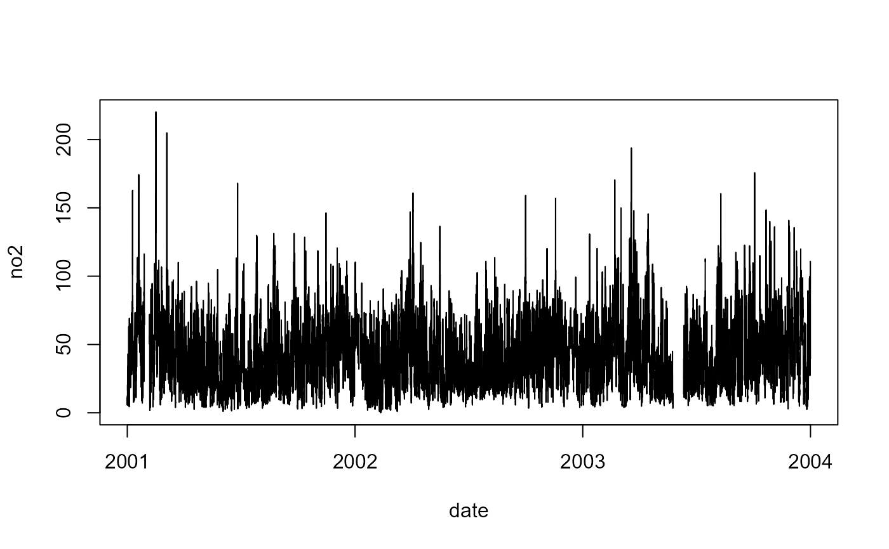

Data packaged with AQEval for use with example code.
Format
(26280x6) 'tbl_df' objects
- date
Time-series of POSIX class date and time records.
- no2
Time-series of nitrogen dioxide measurements from local site.
- bg.no2
Time-series of nitrogen dioxide measurements from nearby background site.
- ws
Time-series of local wind speed measurements.
- wd
Time-series of local wind direction measurements.
- air_temp
Time-series of local air temperature measurements.
Source
Air quality and meteorological data packaged for use with AQEval Examples.
Time-series sources:
date Date-and-time-stamp of POSIX class (
DateTimeClasses).no2 Nitrogen dioxide downloaded from King's College London Archive using
importKCLfunction inopenair.bg.no2 Nitrogen dioxide downloaded from the Automatic Urban and Rural Network Archive using
importAURNfunction inopenair.ws, wd, air_temp Wind speed, wind direction and air temperature downloaded from NOAA's Integrated Surface Database using
importNOAAfunction inworldmet.
Details
Most of functions in AQEval adopt the
openair convention of assuming supplied data is
a single data.frame or similar.
The data frame was initially adopted for two reasons:
Firstly, air quality data collected and archived in numerous formats and keeping the import requirements simple minimises the frustrations associated with data importation.
Secondly, restricting the user to work with a single data format greatly simplifies data management for those less familiar with programming environments.
As part of this work several openair coding
conventions were adopted, most importantly that data
sets should include a column named date of
POSIX class data-and-time-stamps
(DateTimeClasses).
This and other conventions, such as the use of
ws and wd for numeric wind speed and
direction data-series, and site and code
for character or factor monitoring site name and
identifier code, are now commonplace for many working
with R in the air quality research community, and many
air quality archives provide data in (or support import
functions that convert their own data structures to)
this openair-friendly structure.
References
Regarding openair and openair-friendly
data structuring, see:
Carslaw, D. C. and K. Ropkins (2012), openair — an R package for air quality data analysis. Environmental Modelling & Software. Volume 27-28, 52-61, DOI doi:10.1016/j.envsoft.2011.09.008
Ropkins, K. and D.C. Carslaw (2012), openair-Data Analysis Tools for the Air Quality Community. R Journal, 4(1). URL https://journal.r-project.org/archive/2012/RJ-2012-003/RJ-2012-003.pdf
Regarding worldmet, see:
David Carslaw (2021), worldmet: Import Surface Meteorological Data from NOAA Integrated Surface Database (ISD). R package version 0.9.5. URL https://CRAN.R-project.org/package=worldmet
See also
openair: functions importAURN and
importKCL
worldmet: function importNOAA (See References)
Examples
#data set used in AQEval Examples
dim(aq.data)
#> [1] 26280 8
head(aq.data)
#> # A tibble: 6 × 8
#> date no2 bg.no2 ws wd air_temp dswb.no2 dswb.no2b
#> <dttm> <dbl> <dbl> <dbl> <dbl> <dbl> <dbl> <dbl>
#> 1 2001-01-01 00:00:00 5.77 NA 8.5 170 5.55 NA NA
#> 2 2001-01-01 01:00:00 6.50 NA 6.95 170 6.5 NA NA
#> 3 2001-01-01 02:00:00 11.0 NA 5.95 170 7.5 NA NA
#> 4 2001-01-01 03:00:00 7.38 NA 6.2 181. 8.4 NA NA
#> 5 2001-01-01 04:00:00 5.77 NA 7.45 190 8.8 NA NA
#> 6 2001-01-01 05:00:00 5.77 NA 7.45 190 9 NA NA
with(aq.data, plot(date, no2, type="l"))
